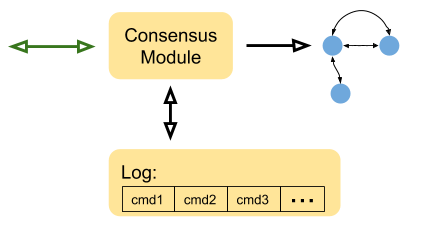
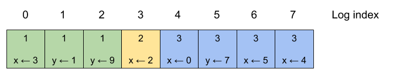

This is Part 2 in a series of posts describing the Raft distributed consensus algorithm and its complete implementation in Go. Here is a list of posts in the series:
- Part 0: Introduction
- Part 1: Elections
- Part 2: Commands and log replication (this post)
- Part 3: Persistence and optimizations
- Part 4: Key/Value database
- Part 5: Exactly-once delivery
In this part, we'll greatly enhance the Raft implementation to actually handle commands submitted by clients and replicate them across the Raft cluster. The code structure remains the same as in Part 1. There are a couple of new structs and functions and some changes to existing code - I'll present and explain all of these shortly.
All the code in this part is located in this directory.
Client interaction
We already had a brief discussion of client interaction in Part 0; I strongly encourage you to go back and re-read that section. Here we're not going to focus on how a client finds the leader; rather, we'll talk about what happens when it finds one.
Some terminology first; as discussed earlier, clients use Raft to replicate a sequence of commands, which can be seen as inputs to a generic state machine. As far as our Raft implementation is concerned, these commands are completely arbitrary and we represent them with Go's any type. A command goes through the following process in its Raft consensus journey:
- First, a command is submitted to the leader by a client. In a cluster of Raft peers, a command is typically submitted only to a single peer.
- The leader replicates the command to its followers.
- Finally, once the leader is satisfied that the command is sufficiently replicated (that is, a majority of cluster peers acknowledge they have the command in their logs [1]), the command is committed and all clients are notified of a new commit.
Note the asymmetry between submitting and committing a command - this is important to keep in mind when examining the implementation decisions we're going to be discussing soon. A command is submitted to a single Raft peer, but multiple peers (specifically, all connected/live peers) commit it after some time and notify their clients.
Recall this diagram from Part 0:
The state machine represents an arbitrary service using Raft for replication; for example, this could be a key-value database. Committed commands change the state of the service (e.g. add a key/value pair to the database).
When we're talking of a client in the context of a Raft ConsensusModule, we usually mean this service, because this is where the commits are reported to. In other words, the black arrow from Consensus Module to the service state machine is that notification.
There's another notion of client, which is the client of the service (e.g. a user of the key-value database). The service's interaction with its clients is its own business; in this post we focus just on Raft's interaction with the service.
Implementation: commit channel
In our implementation, when a ConsensusModule is created it takes in a commit channel - a channel which it uses to send committed commands to the caller: commitChan chan<- CommitEntry.
CommitEntry is defined as follows:
// CommitEntry is the data reported by Raft to the commit channel. Each commit
// entry notifies the client that consensus was reached on a command and it can
// be applied to the client's state machine.
type CommitEntry struct {
// Command is the client command being committed.
Command any
// Index is the log index at which the client command is committed.
Index int
// Term is the Raft term at which the client command is committed.
Term int
}
Using a channel for this is a design choice, but it's not the only way to solve it. We could use a callback instead; when creating a ConsensusModule the caller would register a callback function that we'd invoke whenever we have a command to commit.
We'll see the code that sends entries on the channel shortly; first, we have to discuss how Raft servers replicate commands and decide that commands are committed.
Raft log
The Raft log has been mentioned a number of times in this series already, but we haven't yet said much about it. The log is simply the linear sequence of commands that should be applied to the state machine; the log should be sufficient to "replay" the state machine from some starting state, if needed. During normal operation, the logs of all Raft peers are identical; when the leader gets a new command, it places it in its own log and then replicates it to followers. Followers place the command in their logs and acknowledge it to the leader, which keeps count of the latest log index that was safely replicated to a majority of servers in the cluster.
The Raft paper has several diagrams of logs that look somewhat like this:
Each box is a log entry; a number in the top part of the box is the term in which it was added to the log (these are the terms from Part 1). The bottom part is the key-value command that this log contains. Each log entry has a linear index [2]. The colors of the boxes are another representation of terms.
If this log is applied to an empty key-value store, the end result will have the values x = 4, y = 7.
In our implementation, log entries are represented by:
type LogEntry struct {
Command any
Term int
}
And each ConsensusModule's log is then simply log []LogEntry. The clients typically don't care about terms; terms are critical to the correctness of Raft, however, so they're important to keep in mind when reading the code.
Submitting new commands
Let's start with the new Submit method, which lets clients submit new commands:
func (cm *ConsensusModule) Submit(command any) bool {
cm.mu.Lock()
defer cm.mu.Unlock()
cm.dlog("Submit received by %v: %v", cm.state, command)
if cm.state == Leader {
cm.log = append(cm.log, LogEntry{Command: command, Term: cm.currentTerm})
cm.dlog("... log=%v", cm.log)
return true
}
return false
}
Very straightforward; if this CM is a leader, the new command is appended to the log and true is returned. Otherwise, it's ignored and false is returned.
Q: Is a true value returned from Submit sufficient indication for the client that it has submitted a command to the leader?
A: Unfortunately not. In rare cases, a leader may become partitioned from the other Raft servers, who will go on to elect a new leader after a while. Clients may still be contacting the old leader, however. A client should wait for some reasonable time for the command it submitted to appear on the commit channel; if it doesn't, it means that it contacted the wrong leader and it should retry with a different leader.
Replicating log entries
We've just seen that a new command submitted to the leader is appended at the end of the log. How does this new command get to followers? The steps followed by leaders are precisely described in the Raft paper, Figure 2 in the "Rules for Servers" section. Our implementation does this in leaderSendHeartbeats; this is the new method [3]:
func (cm *ConsensusModule) leaderSendHeartbeats() {
cm.mu.Lock()
savedCurrentTerm := cm.currentTerm
cm.mu.Unlock()
for _, peerId := range cm.peerIds {
go func(peerId int) {
cm.mu.Lock()
ni := cm.nextIndex[peerId]
prevLogIndex := ni - 1
prevLogTerm := -1
if prevLogIndex >= 0 {
prevLogTerm = cm.log[prevLogIndex].Term
}
entries := cm.log[ni:]
args := AppendEntriesArgs{
Term: savedCurrentTerm,
LeaderId: cm.id,
PrevLogIndex: prevLogIndex,
PrevLogTerm: prevLogTerm,
Entries: entries,
LeaderCommit: cm.commitIndex,
}
cm.mu.Unlock()
cm.dlog("sending AppendEntries to %v: ni=%d, args=%+v", peerId, ni, args)
var reply AppendEntriesReply
if err := cm.server.Call(peerId, "ConsensusModule.AppendEntries", args, &reply); err == nil {
cm.mu.Lock()
defer cm.mu.Unlock()
if reply.Term > savedCurrentTerm {
cm.dlog("term out of date in heartbeat reply")
cm.becomeFollower(reply.Term)
return
}
if cm.state == Leader && savedCurrentTerm == reply.Term {
if reply.Success {
cm.nextIndex[peerId] = ni + len(entries)
cm.matchIndex[peerId] = cm.nextIndex[peerId] - 1
cm.dlog("AppendEntries reply from %d success: nextIndex := %v, matchIndex := %v", peerId, cm.nextIndex, cm.matchIndex)
savedCommitIndex := cm.commitIndex
for i := cm.commitIndex + 1; i < len(cm.log); i++ {
if cm.log[i].Term == cm.currentTerm {
matchCount := 1
for _, peerId := range cm.peerIds {
if cm.matchIndex[peerId] >= i {
matchCount++
}
}
if matchCount*2 > len(cm.peerIds)+1 {
cm.commitIndex = i
}
}
}
if cm.commitIndex != savedCommitIndex {
cm.dlog("leader sets commitIndex := %d", cm.commitIndex)
cm.newCommitReadyChan <- struct{}{}
}
} else {
cm.nextIndex[peerId] = ni - 1
cm.dlog("AppendEntries reply from %d !success: nextIndex := %d", peerId, ni-1)
}
}
}
}(peerId)
}
}
This is certainly more complicated than what we did in Part 1, but it really just follows Figure 2 in the paper. A few notes on this code:
- The fields of an AE RPC are fully populated now: see Figure 2 in the paper for their meaning.
- AE responses have a success field that tell the leader whether the follower saw a match for prevLogIndex and prevLogTerm. Based on this field, the leader updates nextIndex for this follower.
- commitIndex is updated based on the count of followers that replicated a certain log index. If an index is replicated by a majority, commitIndex advances to it.
This part of the code is particularly important in relation to our earlier discussion of client interaction:
if cm.commitIndex != savedCommitIndex {
cm.dlog("leader sets commitIndex := %d", cm.commitIndex)
cm.newCommitReadyChan <- struct{}{}
}
newCommitReadyChan is a channel used internally by the CM to signal that new entries are ready to be sent on the commit channel to the client. It's acted upon by this method which is run in a goroutine on CM start-up:
func (cm *ConsensusModule) commitChanSender() {
for range cm.newCommitReadyChan {
// Find which entries we have to apply.
cm.mu.Lock()
savedTerm := cm.currentTerm
savedLastApplied := cm.lastApplied
var entries []LogEntry
if cm.commitIndex > cm.lastApplied {
entries = cm.log[cm.lastApplied+1 : cm.commitIndex+1]
cm.lastApplied = cm.commitIndex
}
cm.mu.Unlock()
cm.dlog("commitChanSender entries=%v, savedLastApplied=%d", entries, savedLastApplied)
for i, entry := range entries {
cm.commitChan <- CommitEntry{
Command: entry.Command,
Index: savedLastApplied + i + 1,
Term: savedTerm,
}
}
}
cm.dlog("commitChanSender done")
}
This method updates the lastApplied state variable to know which entries were already sent to the client, and sends only new ones.
Updating logs in followers
We've seen what the leader does with new log entries. Now it's time to examine the code of followers; specifically, the AppendEntries RPC. In the following code sample, lines that are new compared to Part 1 are highlighted:
func (cm *ConsensusModule) AppendEntries(args AppendEntriesArgs, reply *AppendEntriesReply) error {
cm.mu.Lock()
defer cm.mu.Unlock()
if cm.state == Dead {
return nil
}
cm.dlog("AppendEntries: %+v", args)
if args.Term > cm.currentTerm {
cm.dlog("... term out of date in AppendEntries")
cm.becomeFollower(args.Term)
}
reply.Success = false
if args.Term == cm.currentTerm {
if cm.state != Follower {
cm.becomeFollower(args.Term)
}
cm.electionResetEvent = time.Now()
// Does our log contain an entry at PrevLogIndex whose term matches
// PrevLogTerm? Note that in the extreme case of PrevLogIndex=-1 this is
// vacuously true.
if args.PrevLogIndex == -1 ||
(args.PrevLogIndex < len(cm.log) && args.PrevLogTerm == cm.log[args.PrevLogIndex].Term) {
reply.Success = true
// Find an insertion point - where there's a term mismatch between
// the existing log starting at PrevLogIndex+1 and the new entries sent
// in the RPC.
logInsertIndex := args.PrevLogIndex + 1
newEntriesIndex := 0
for {
if logInsertIndex >= len(cm.log) || newEntriesIndex >= len(args.Entries) {
break
}
if cm.log[logInsertIndex].Term != args.Entries[newEntriesIndex].Term {
break
}
logInsertIndex++
newEntriesIndex++
}
// At the end of this loop:
// - logInsertIndex points at the end of the log, or an index where the
// term mismatches with an entry from the leader
// - newEntriesIndex points at the end of Entries, or an index where the
// term mismatches with the corresponding log entry
if newEntriesIndex < len(args.Entries) {
cm.dlog("... inserting entries %v from index %d", args.Entries[newEntriesIndex:], logInsertIndex)
cm.log = append(cm.log[:logInsertIndex], args.Entries[newEntriesIndex:]...)
cm.dlog("... log is now: %v", cm.log)
}
// Set commit index.
if args.LeaderCommit > cm.commitIndex {
cm.commitIndex = intMin(args.LeaderCommit, len(cm.log)-1)
cm.dlog("... setting commitIndex=%d", cm.commitIndex)
cm.newCommitReadyChan <- struct{}{}
}
}
}
reply.Term = cm.currentTerm
cm.dlog("AppendEntries reply: %+v", *reply)
return nil
}
This code follows the algorithm in Figure 2 of the paper (Received implementation section of AppendEntries) closely, and it's well commented.
Note the send on ch.newCommitReadyChan when the code notices that the leader's LeaderCommit is larger than its own cm.commitIndex; this is when a follower learns that the leader considers additional entries to be committed.
When a leader sends new log entries with AE, the following happens:
- A follower appends the new entries to its log and replies success=true to the leader.
- As a result, the leader updates its matchIndex for this follower. When enough followers have their matchIndex at the next index, the leader updates commitIndex and sends it to all followers in the next AE (in the leaderCommit field).
- When followers receive a new leaderCommit that's beyond what they've seen before, they know that new log entries are committed and they can send them to their clients on the commit channel.
Q: How many RPC round-trips does it take to commit a new command?
A: Two. First round for the leader to send the next log entries to followers and for the followers to acknowledge them. When the leader processes a reply to an AE, it may update its commit index based on the response. The second round will send an updated commit index to followers, who will then mark these entries as committed and will send them on the commit channel. As an exercise, go back to the code snippets above and find the pieces of code that implement these steps.
Election safety
So far we've looked at the new code added to support log replication. However, logs also have an effect on Raft elections. The Raft paper describes this in section 5.4.1 - Election restriction. Raft uses the election process to prevent a candidate from winning an election unless its log is at least as up-to-date as a majority of peers in the cluster [4].
For this reason, RVs contain the lastLogIndex and lastLogTerm fields. When a candidate sends out an RV, it populates these with information about its last log entry. Followers compare these fields to their own and decide whether the candidate is sufficiently up-to-date to be elected.
Here's the new startElection with added lines highlighted:
func (cm *ConsensusModule) startElection() {
cm.state = Candidate
cm.currentTerm += 1
savedCurrentTerm := cm.currentTerm
cm.electionResetEvent = time.Now()
cm.votedFor = cm.id
cm.dlog("becomes Candidate (currentTerm=%d); log=%v", savedCurrentTerm, cm.log)
votesReceived := 1
// Send RequestVote RPCs to all other servers concurrently.
for _, peerId := range cm.peerIds {
go func(peerId int) {
cm.mu.Lock()
savedLastLogIndex, savedLastLogTerm := cm.lastLogIndexAndTerm()
cm.mu.Unlock()
args := RequestVoteArgs{
Term: savedCurrentTerm,
CandidateId: cm.id,
LastLogIndex: savedLastLogIndex,
LastLogTerm: savedLastLogTerm,
}
cm.dlog("sending RequestVote to %d: %+v", peerId, args)
var reply RequestVoteReply
if err := cm.server.Call(peerId, "ConsensusModule.RequestVote", args, &reply); err == nil {
cm.mu.Lock()
defer cm.mu.Unlock()
cm.dlog("received RequestVoteReply %+v", reply)
if cm.state != Candidate {
cm.dlog("while waiting for reply, state = %v", cm.state)
return
}
if reply.Term > savedCurrentTerm {
cm.dlog("term out of date in RequestVoteReply")
cm.becomeFollower(reply.Term)
return
} else if reply.Term == savedCurrentTerm {
if reply.VoteGranted {
votesReceived++
if votesReceived*2 > len(cm.peerIds)+1 {
// Won the election!
cm.dlog("wins election with %d votes", votes)
cm.startLeader()
return
}
}
}
}
}(peerId)
}
// Run another election timer, in case this election is not successful.
go cm.runElectionTimer()
}
And lastLogIndexAndTerm is a new helper method:
// lastLogIndexAndTerm returns the last log index and the last log entry's term
// (or -1 if there's no log) for this server.
// Expects cm.mu to be locked.
func (cm *ConsensusModule) lastLogIndexAndTerm() (int, int) {
if len(cm.log) > 0 {
lastIndex := len(cm.log) - 1
return lastIndex, cm.log[lastIndex].Term
} else {
return -1, -1
}
}
A reminder that our implementation has 0-based indexing as opposed to the Raft paper's 1-based indexing. Therefore -1 often serves as a sentinel value.
Here's an updated RV handler that implements the election safety check, with the new code highlighted:
func (cm *ConsensusModule) RequestVote(args RequestVoteArgs, reply *RequestVoteReply) error {
cm.mu.Lock()
defer cm.mu.Unlock()
if cm.state == Dead {
return nil
}
lastLogIndex, lastLogTerm := cm.lastLogIndexAndTerm()
cm.dlog("RequestVote: %+v [currentTerm=%d, votedFor=%d, log index/term=(%d, %d)]", args, cm.currentTerm, cm.votedFor, lastLogIndex, lastLogTerm)
if args.Term > cm.currentTerm {
cm.dlog("... term out of date in RequestVote")
cm.becomeFollower(args.Term)
}
if cm.currentTerm == args.Term &&
(cm.votedFor == -1 || cm.votedFor == args.CandidateId) &&
(args.LastLogTerm > lastLogTerm ||
(args.LastLogTerm == lastLogTerm && args.LastLogIndex >= lastLogIndex)) {
reply.VoteGranted = true
cm.votedFor = args.CandidateId
cm.electionResetEvent = time.Now()
} else {
reply.VoteGranted = false
}
reply.Term = cm.currentTerm
cm.dlog("... RequestVote reply: %+v", reply)
return nil
}
Revisiting the "runaway server" scenario
In Part 1, we've discussed a scenario where server B in a 3-server cluster gets disconnected for a few seconds, which causes it to become a candidate and re-run a new round of elections every 150-300 ms. When it reconnects to the cluster, its term is much higher than the peers that remained in the cluster without being aware of new elections.
Now it's a good time to revisit this scenario, and consider what happens if the connected peers replicated some log entries during this time.
Even though B's return to the cluster will trigger a re-election (the leader will still see a higher term than its own in an AE reply and revert to follower), B won't be able to win the election because its log is going to be less complete than the logs of A and C. This is due to the election safety checks presented in the previous section. Either A or C will win the re-election, and so the disruption to the cluster will be relatively minimal.
If you are still concerned about this unnecessary disruption (why run re-election at all?), Ongaro's dissertation discusses this precise problem in a section titled "Preventing disruptions when a server rejoins a cluster". The common solution to this problem is a "pre-vote" step, where a server performs some checks before becoming a candidate.
Since this is an optimization for an uncommon case, I will not spend more time on this topic. Feel free to check out the dissertation - it's linked from the Raft website.
Some Q&A
We'll finish this part with some common questions that may arise while studying and implementing Raft. If you have additional questions, feel free to send me an email - I'll collect the most common ones and will update these posts.
Q: Why is commitIndex separate from lastApplied? Can't we just record how much commitIndex has advanced as a result of an RPC (or RPC response) and send only these commands to clients?
A: The two are separate to decouple quick operations (RPC handling) from potentially slow operations (sending commands to clients). Consider what happens when a follower gets an AE and learns that the leader's commitIndex is larger than its own. At this point it can send a number of log commands to the commit channel. But sending values on a channel (or invoking a callback) can be a potentially blocking operation, whereas we want to reply to the RPC as soon as possible. lastApplied helps us decouple these. The RPC only updates commitIndex, and the commitChanSender goroutine runs in the background to observe these changes and send new committed commands to the client at its leisure.
You may wonder if the same applies to the newCommitReadyChan channel, and that's a good observation. This channel is buffered, however, and since we control both sides we can set a small buffer that will guarantee no blocking with high probability. Still, in corner cases very slow clients can delay RPCs because the Raft code cannot be expected to maintain an infinite buffer. This is not necessarily a bad thing, as it creates a natural backpressure mechanism.
Q: Do we need both nextIndex and matchIndex per peer in the leader?
A: The algorithm would still work with only matchIndex, but it would be very inefficient in some cases. Consider a leadership change; the new leader can't assume anything about the up-to-dateness of its peers and initializes matchIndex to -1. So it will attempt to send the whole log to each follower. But it's very likely that followers (at least most of them) have almost all the same log entries; nextIndex helps the leader probe the followers carefully starting from the end of the log, and not replicate huge logs unnecessarily.
What's next
Once again, I will strongly encourage you to play with the code - run some of the tests and observe the logs.
At this point we have a mostly working Raft implementation, except that we don't handle persistence at all. This means that our implementation is vulnerable to crash faults, wherein a server crashes and restarts.
The Raft algorithm has provision for this, and this is what Part 3 will cover. Adding persistence will enable us to craft more insidious tests that include servers crashing at the worst time possible.
In addition, Part 3 will discuss some optimizations to the implementation presented here. Most importantly, leaders should send AEs more promptly when they have new information for followers; right now they only send AEs every 50 ms. This will also be fixed.
| [1] | For example, in a cluster of size 5, the leader will expect acknowledgments from 2 followers. This makes the total 3 (the 2 followers plus the leader itself), which is a valid majority. |
| [2] | This is the place to note that, while in the Raft paper log indices are 1-based, in our implementation they are 0-based since this feels much more natural. These indices have no real effect on the client/user of a Raft ConsensusModule. |
| [3] | Calling this method leaderSendHeartbeats is a bit of a misnomer at this point, because it no longer just sends heartbeats. However, since in this part it still sends AEs only every 50 ms, I'll keep this name. We'll fix it in part 3. |
| [4] | This is a very simplistic explanation, and the truth is more involved. The reasoning of correctness here is quite complicated, and I recommend reading the paper for more details. If you're a stickler for formalism, Ongaro's dissertation has a TLA+ spec of Raft to prove the correctness of these invariants. |